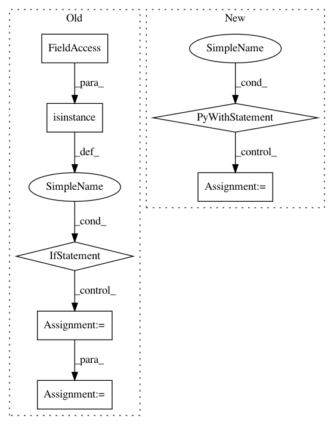

11c6bf1dbd051d087519ff771b39dac600c0d96d,batchflow/models/tf/encoder_decoder.py,EncoderDecoder,head,#Any#Any#Any#Any#,163
Before Change
filters = [filters] * filters_needed(kwargs["layout"])
if isinstance(filters, (list, tuple)) and len(filters) > 0:
if isinstance(filters, tuple):
filters = list(filters)
filters[-1] = channels
kwargs["filters"] = filters
x = conv_block(x, **kwargs)
return x
After Change
channels = cls.num_channels(targets)
if cls.num_channels(x) != channels:
with tf.variable_scope("final"):
x = cls.crop(x, targets, kwargs["data_format"])
args = cls.combine_kwargs(kwargs, dict(layout="c", kernel_size=1, filters=channels))
x = conv_block(x, **args)
return x
@classmethod
def block(cls, inputs, name="block", **kwargs):
In pattern: SUPERPATTERN
Frequency: 3
Non-data size: 7
Instances
Project Name: analysiscenter/batchflow
Commit Name: 11c6bf1dbd051d087519ff771b39dac600c0d96d
Time: 2019-07-29
Author: 7520522+a-arefina@users.noreply.github.com
File Name: batchflow/models/tf/encoder_decoder.py
Class Name: EncoderDecoder
Method Name: head
Project Name: RaRe-Technologies/gensim
Commit Name: 4ea27ba44e2ce56f06c2294d02e59031707e1ca5
Time: 2014-04-19
Author: radimrehurek@seznam.cz
File Name: gensim/matutils.py
Class Name: MmReader
Method Name: __iter__
Project Name: asyml/texar
Commit Name: da37438735fd4b845bb0874562bd071865c480bb
Time: 2018-03-17
Author: zhitinghu@gmail.com
File Name: texar/modules/encoders/rnn_encoders.py
Class Name: RNNEncoderBase
Method Name: __init__